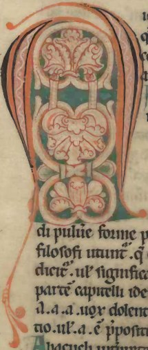
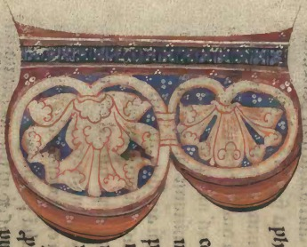
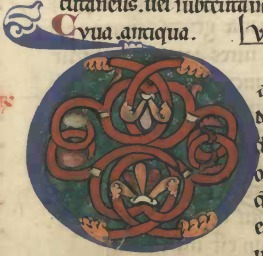
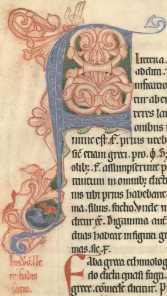
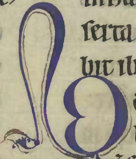
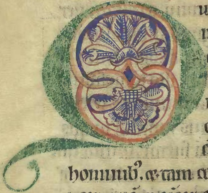
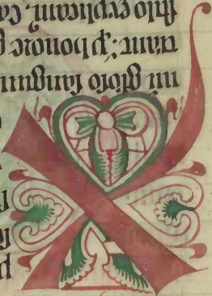

A frase podia ser retirada de um daqueles programas da tradição de qualidade, tipo 70x7, ou estar aposta no placar luminoso de um centro paroquial ou de uma loja de parafernália católica. Podia até ser cantada por um grupo de jovens modernos, com sorrisos radiantes nos rostos, uns dedilhando violas, outros batendo com o ferrinho no triângulo, todos a cantar em coro e todos muito bem lavadinhos, com especial atenção higiénica nos recantos que se escondem em volta do esfenóide, perpetrada de modo dirigista desde o nacimento.
Usando de algum espírito crítico, porém, reparamos que há uma certa noção de bdsm na bíblia, que acaba por transformar uma valente dose de porrada num acto de amor. De modo que os evangelistas e o redentor, nos dias que correm, teriam alguma dificuldade em provar os seus pontos de vista e em angariar fiéis no público-alvo do século XII. No fundo, a paixão de Cristo é a Babilónia. A grande meretriz. O exemplo que salvou o mundo, mimetizado em carne flagelada e sangue que escorre pelas feridas do menino, que fora anunciado pela estrela do Norte.
Nunca terão sido menos carniceiros os cavaleiros cruzados do que, antes deles, foram os centuriões romanos. De modo que o sangue de Cristo jorrou pelas ruas de Jerusalém, tanto como nas de Constantinopla. Iluminou o mundo com o brilhar do ouro muçulmano que os cristãos saquearam na nossa Península. Fez florescer fortalezas de pedra inexpugnáveis, com blocos rachados à força de hérnias, por servos fiéis e amedrontados pelos ditames do Criador.
O sangue de Cristo, esse homem que não teve filhos e que já teria sido gerado por uma virgem, sustentou a realeza mística dos mordomos do palácio e foi quase sempre o pretexto das intestinas lutas de poder na Europa medieval.
O sangue do Criador escorria sobretudo de uma ferida central, divinamente geometrizada em forma de vulva e penetrada, veja-se, por uma lança, de modo que à vulva chamou-se coração e à lança continuou a chamar-se lança.
Lançado no mundo por uma fonte universal, o amor de Cristo (a sua paixão), continuou a nascer todos os dias, sob os raios da estrela da manhã. Esses que são também os que iluminam o crescimento eterno da árvore da vida que, como Cristo, é amor.
Dirão alguns que é do amor que surge o amor. Mas será que o amor pode ser essa coisa universal que os naturalistas apregoaram?
Nem isso interessa agora para nada...
As individualidades são descobertas da pós-modernidade. Antes disso havia a Disney, os contos de fadas, a eucaristia e a exégese dos intelectuais.
Estes últimos, se alguém tiver o cuidado de ler as coisas que escreveram, pareciam fantasiar com penetrações em segredos ocultos, aptas a enunciar revelações. Falavam de feridas como quem fala de amor. De troncos de madeira arranjados em forma de cruz, que eram escolhas que se podiam fazer, entre uma coisa chamada bem e outra coisa chamada mal.
A verdade é que os corações estão presentes um pouco por toda a iconografia do século XII. Muitas vezes estão invertidos - na raiz. Ao centro, no entanto, a chaga central sempre se identificou com a forma estilizada do orgão que faz bombear sangue dentro do corpo. E que gera as sementes da vida, que floresceram, diriam os intelectuais, por via da sementeira dos evangelhos.
Alc. ex. 138, fólio 103, século XIII - Os quatro evangelhos sob a forma de corações floridos. No fundo, se o tetralobo significa os 4 evangelistas, como Mário Barroca defende, também o tetracoração tetraflorido os terá que significar.
Alc. ex. 424, fólio 4v, 1176-1225 - A árvore da vida trinitária. Na raiz, o coração invertido. Ao centro, a chaga central. De tudo isso rebenta o amor, que está no céu, que é a estrela da manhã, que é o sacrifício do Criador, ordenado na árvore crucífera.
Alc. ex. 424, fólio 34v, 1176-1225 - A insistência no motivo do coração não pode deixar de ter significado semântico. Como a insistência nos grupos de três pontos não pode deixar de significar o divino, por alusão à trindade. Como a aposição de 5 quinas em aspa sempre se associará também às cinco chagas de Cristo.
Alc. ex. 424, fólio 77, 1176-1225 - Novamente uma cruz. O coração invertido na raiz. Nos braços da cruz, espirais interseccionadas compõem uma elíptica “vesica piscis” de cada lado. O semeado de três pontos é omnipresente, como o Deus que representa.
Alc. ex. 424, fólio 110v, 1176-1225 - O coração estilizado, feito com dois segmentos do arco de Fibonacci, continua a apresentar-se invertido na raiz e direito acima. A mão de Deus abençoa a representação, com os seus três dedos em gesto de benção. O semeado de três pontos, o florão trinitário, os rebentos vegetalistas da árvore da vida.
Alc. ex. 430, fólio 86v - Uma representação original, sobre a qual os psicanalistas muito teriam a dizer. Talvez o coração possa também elevar a cruz, ou o menir do Obélix.
Alc. ex. 422, fólio 194v - Às vezes os corações entrelaçam-se e formam nós, que podem ser vistos como cruzes. A chaga central, essa, tanto se representou na idade média por meio da elipse divina, como por meio do losango. Cinco pétalas são cinco chagas.
Alc. ex. 422, fólio 205 - Naturalmente que as capitulares são para serem vistas de vários ângulos. Esta lê-se bem invertida. Três corações, que são o Pai, o Filho e o Espírito Santo. E quatro raios, que são Lucas, Marcos, Mateus e João. Ou melhor, o touro, o leão, o homem e a águia.
Naturalmente que o formato dos motivos decorativos virá de modelos que se copiavam e adaptavam. Duvidamos é que a semântica dos mesmos não existisse e não fosse compreendida pelos percussores do amor sacrificial, que certamente a veriam como revelações e manifestações do divino.
Quem somos nós para dizermos que eles estavam errados nas ideias que defendiam? Que nos interessa isso sequer? Numa coisa teriam razão. O sol nasce todos os dias, para todas as pessoas que possam ou se dignem olhá-lo. Duvidamos é que se represente do mesmo modo em todos os olhares. E se é assim com o sol, porque não há-de sê-lo também com o amor?